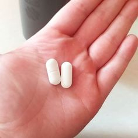

Męski pogląd
Science for the curious

D-brief
Piotr Kowalczyk: po 50 życie dopiero się zaczyna - jak odzyskałem
młodość seksualną i zdrowie!
O Bridget Alex |
Chcę podzielić się z Wami moją historią życia - być może ostrzeże was
przed takimi błędami i zwróci uwagę na naprawdę ważne problemy. Mogę tylko powiedzieć, że
teraz czuję się w 100% - nie czułem takiej siły i energii nawet w młodości! Ale najpierw
najważniejsze.

Kilka słów o mnie
Mam 53 lata. Ukończyłam dziennikarstwo na Uniwersytecie w Poznaniu.
Pracowałem w kilku gazetach, zanim zostałem wysłany jako korespondent wojenny do Afganistanu.
Moja żona zmarła w 2010 roku w wypadku samochodowym. Kiedy miałem 50 lat, zrezygnowałem i
przeprowadziłem się do Kraków.
Nie mieliśmy z żoną dzieci, więc zostałem sam. Tylko moje hobby
uratowało mnie przed całkowitą samotnością - fotografia. Byłem tym zafascynowany w czasach pracy
jako korespondent wojenny. Moje hobby stało się dla mnie godnym dodatkowym dochodem -
przeprowadzałem profesjonalne sesje zdjęciowe i robiłem zdjęcia na weselach, imprezach firmowych
i innych wydarzeniach publicznych.
W wieku 53 lat czułem się świetnie i obwiniałem wszystkie lekkie
dolegliwości o meteosensywność, zły nastrój i inne powody. Dlatego tęskniłem za bardzo ważnym
punktem: pójście do toalety z powodu potrzeby przekształciło mnie w straszną torturę. Ale jestem
mężczyzną, zniosę to - zdecydowałem, i znowu napisałem to do sprawy, kiedy spędziłem długi czas
łowiąc na mokrej i zimnej glebie. Z biegiem czasu ból przeszedł w tło, początkowo był problem z
erekcją - rano przestałem wstawać, a na widok pięknych kobiet nawet nie myślałem o seksie! „Co
możesz zrobić, wiek!” - pomyślałem i pogodziłem się z myślą, że każdy następny dzień mojego
życia będzie jak poprzedni. Właśnie patrzyłem, jak inni ludzie cieszą się życiem i byli gotowi
żyć życiem starego człowieka.
Ale, Bóg widzi, moje życie wywróciło się do góry nogami, kiedy najmniej
się tego spodziewałem! Spotkałem ... dziewczynę. Była tak piękna, że pragnienie posiadania jej
dosłownie przyćmiło mój mózg.
A teraz najciekawsze!
Po raz pierwszy zobaczyłem ją na imprezie, na której pracowałem jako
fotograf. Ku mojemu zdziwieniu Anna również mnie zainteresowała. W ciągu zaledwie 2 tygodni
zaczęliśmy się spotykać. Pomimo znacznej różnicy wieku - aż 28 lat, obok niej czułem się bardzo
młody.
Ale jedna rzecz zniszczyła wszystko...
Kiedy po raz pierwszy weszliśmy do łóżka, wszystko poszło okropnie.
Mówiąc najprościej, byłem po prostu zakłopotany - tylko 2 minuty i nasz seks się skończył.
Jednocześnie było dla mnie tak bolesne, że prawie krzyknąłem z bólu. Anna była bardzo zirytowana
tym, co się działo. Jej dalsze działania były dość przewidywalne - zerwała ze mną, mówiąc, że
nie chce być ze starcem, który nie może jej zadowolić. To był niski cios. Okazuje się, że cały
czas mnie okłamywała, kiedy rozmawiała o naszej przyszłości razem. Byłem tak zły, że pod koniec
dnia złapałem moje serce.
W tym momencie postanowiłem zmienić swoje życie. Zapisałem się na wizytę
u lekarza, a nawet zdał niezbędne testy. Diagnoza mnie zaskoczyła - zdiagnozowano u mnie
zapalenie gruczołu krokowego. Stąd wszystkie symptomy - częsta potrzeba sikania, brak erekcji i
bardzo katastrofalny seks z bolesnym końcem. Lekarz zaproponował mi dwie opcje leczenia - jedna
z nich oznaczała przyjmowanie antybiotyków w dawkach końskich, druga była całkowicie naturalna i
bezpieczna. Oczywiście wybrałem drugą opcję!
Okazał się nim preparat wykonane według
receptur starożytnego Azteków. Składał się wyłącznie z naturalnych składników - ekstraktów z
imbiru, aloesu, indyjskich kolczastych gruszek, szparagów i cynku. Jak wyjaśnił mi lekarz,
przepis ten jest znany od setek lat - Aztekowie dawno temu leczyli go zapaleniem gruczołu
krokowego, a ostatnie badania kliniczne potwierdziły wysoką skuteczność środka w walce z
chorobą.
„To nie było!” - pomyślałem i zacząłem kurację . Tydzień
później poczułem znaczącą poprawę w moim stanie. A dwa tygodnie później poranny poranek wrócił
do mnie! I wtedy zdecydowałem, że musimy działać - zadzwoniłem do Aliny i zaprosiłem ją na
randkę. Zgodziła się, ale było oczywiste, że nie jest szczególnie zadowolona z tego, co się
dzieje. Zjedliśmy kolację, wypiliśmy kilka szklanek i postanowiliśmy spróbować ponownie.
Wszystko poszło lepiej niż oczekiwałem!
Udało mi się wytrzymać przez 2 godziny. Anna była wstrząśnięta
falami rozkoszy i po raz pierwszy od wielu lat czułem się jak prawdziwy mężczyzna. Rany, nie
byłem taki dobry w łóżku nawet w wieku 20 lat! Anna przyznała, że nigdy wcześniej nie miała
czegoś takiego.
Anna
Ostatnio widziano
dzisiaj o 13:25
dzisiaj o 13:25
Wpisz wiadomość

Jeszcze kilka razy spotkaliśmy się na burzliwy, czarujący seks. Nadal
doskonale pamiętałam, jak Anna powiedziała mi, że nie chce być ze starcem ... Wciąż pamiętałam
zniewagę i ból, który mnie spowodowała. W następnym dniu natychmiast powiedziałem jej, że możemy
zostać przyjaciółmi. Po rozstaniu nie chciałem rezygnować z krzyża, więc zapisałem się na serwis
randkowy. Od czasu do czasu spotykam się z dziewczynami, moje życie seksualne całkowicie się
poprawiło - w łóżku nie było już więcej pożarów!
Zdałem sobie sprawę, że moje zaniedbanie zdrowia prawie pozbawiło mnie
ważnej części mojego życia - seksu! Dlatego po ukończeniu kursu poszedłem do lekarza na wizytę i
jeszcze raz zdałem testy, chociaż objawy mnie nie przeszkadzały. Wyniki potwierdziły, że jestem
tak zdrowa jak zawsze, pełna siły i energii, a teraz nic nie przeszkadza w moim życiu
seksualnym! Lekarz poradził mi, aby powtórzyć kurs w ciągu sześciu miesięcy, aby naprawić wynik,
po czym natychmiast zamówiłem kolejny kurs na oficjalnej stronie
producenta.
Oto koniec opowieści o tym, jak zmieniła moje życie. Na
koniec chciałbym powiedzieć jedną ważną rzecz. chłopaki, w wieku 50 lat, wasze życie właśnie
się zaczęło !!!
Komentarze
Adam Borowski
naprawdę działa. I chociaż nie mam 60 lat,
wypiłem kurs, jak tylko odkryłem pierwsze problemy z erekcją. To doskonała
profilaktyka - pomogła mi wrócić wszystko na swoje miejsce! Niestety, niektóre
rzeczy zdarzają się niezależnie od naszych pragnień, dlatego gdy pojawiają się
pierwsze objawy zapalenia gruczołu krokowego, lepiej jest od razu leczyć, a nie
wszystko, jak kolega wyżej.

Damian Kowalski
Niesamowity staruszek! Nigdy bym nie pomyślał, że w wieku 50
lat taki sukces z kobietami jest możliwy. Właśnie skończyłem 56 lat i moja sytuacja
jest nieco bardziej żałosna. Ale jeśli tak chwalicie męską obronę, na pewno zamówię
i spróbuję dla siebie. A tak przy okazji, czy mógłbyś wysłać mi link do strony
randkowej? ;););) Przejdę kurację i sprawdzę skuteczność leku w praktyce.
Aleks Grzegorczyk
Po raz pierwszy zamówiłem 6 miesięcy temu, kiedy
miałem podobne problemy: brak ciepła, częste chodzenie do toalety ... Z pomocą tego
leku wróciłem do szeregów i teraz doprowadzam moją młodą żonę do szału!
Ola Kowalska
Kilka miesięcy zajęło mi przekonanie męża do wypicia kuracji
. Widziałem, jak on cierpi, a ona sama cierpiała - po prostu nie
wyobrażam sobie życia bez seksu, a on nie mógł w żaden sposób stać (((Nasze
małżeństwo było bliskie zerwania, gdy sam zamówiłem lek na oficjalnej
stronie . Zdrowie jej męża znacznie się poprawiło, a teraz cieszymy się
długim i zmysłowym seksem każdego dnia. Jestem szczęśliwy !!!
Piotr Derak
Lekarz zdiagnozował u mnie przewlekłe zapalenie gruczołu
krokowego. Obrona mężczyzn dostrzegła kurs, wszystkie objawy zniknęły jak ręka,
sześć miesięcy później konieczne byłoby powtórzenie i naprawienie efektu.
Michał Jarczuk
Jest to częsty problem dla starszych mężczyzn, ale ostatnio
choroba stała się znacznie młodsza. Dlatego konieczne jest, aby każdy człowiek dbał
o swoje zdrowie, a głupotą jest zapoczątkowanie choroby takiej jak Aleksander ...
Wybacz mi!
Igor Walczak
Istnieje wiele informacji zwrotnych od pacjentów i lekarzy.
Dowodzi to skuteczności tego narzędzia! Przy okazji, dla zainteresowanych - teraz
możesz zamówić 50% zniżki na stronie - dobre
oszczędności.
Julek Akod
W pełni zgadzam się z powyższymi komentarzami! Obrona męska
naprawdę działa, a na pewno lepiej niż jakikolwiek antybiotyk i masaż.
Igor Kowal
Dzięki za informacje. Bardzo szybko natknąłem się na twój
artykuł...
Stanisław Dudziak
Dziękuję bardzo! To niesamowite, że w tym wieku żyjesz pełnią
życia! Oczywiście sposób, w jaki prowadziła Anna, jest po prostu okropny, więc
postąpiłeś słusznie, kiedy ją opuściłeś.